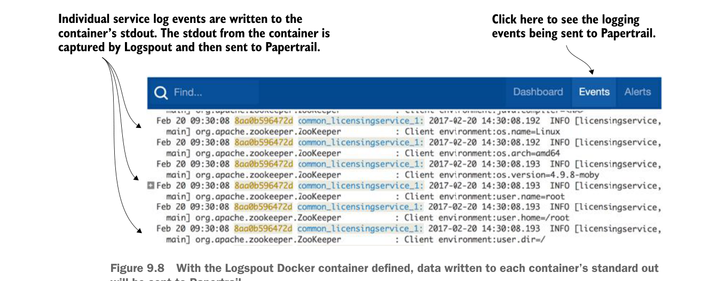

có thể kết nối với docker.sock và nhận tất cả thông điệp do tất cả các container khác đang chạy trên máy chủ đó tạo ra. Nói đơn giản nhất, docker.sock giống như một đường ống mà các container của bạn có thể cắm vào để capture tổng thể các hoạt động diễn ra trong môi trường runtime Docker trên máy ảo mà Docker daemon đang chạy.
Bạn sẽ sử dụng một phần mềm được “Docker hóa” gọi là Logspout (https://github.com/gliderlabs/logspout) lắng nghe socket docker.sock, sau đó capture mọi thông điệp standard out được tạo ra trong Docker runtime và chuyển hướng output tới syslog từ xa (Papertrail). Để thiết lập container Logspout, bạn chỉ cần thêm một mục vào tệp docker-compose.yml dùng để khởi chạy tất cả container Docker cho các ví dụ mã trong chương này. Tệp docker/common/docker-compose.yml cần chỉnh sửa nên có mục sau được thêm vào:
logspout:
image: gliderlabs/logspout
command: syslog://logs5.papertrailapp.com:21218
volumes:
- /var/run/docker.sock:/var/run/docker.sockGiờ khi bạn khởi chạy môi trường Docker trong chương này, mọi dữ liệu gửi tới standard output của container sẽ được gửi tới Papertrail. Bạn có thể tự kiểm chứng bằng cách đăng nhập vào tài khoản Papertrail sau khi đã khởi chạy các ví dụ Docker của chương 9 và nhấp nút Events ở phía trên bên phải màn hình.
Hình 9.8 cho thấy ví dụ về dữ liệu gửi tới Papertrail trông như thế nào.

Với container Docker Logspout đã được định nghĩa, dữ liệu ghi vào standard out của mỗi container sẽ được gửi tới Papertrail.